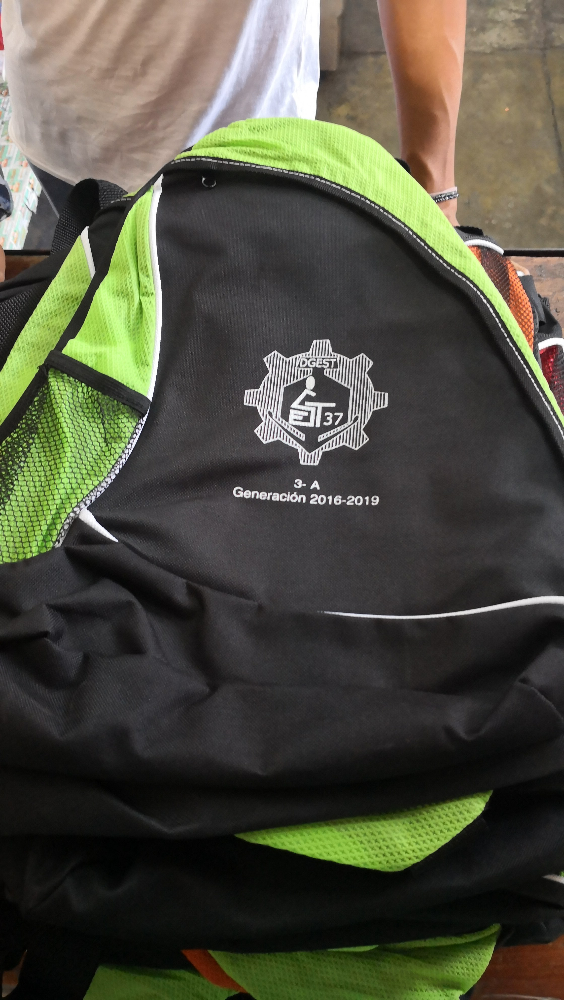

PRODUCTOS
CORTE VINIL
El Corte en Vinil es un sistema de presentación gráfica que involucra un Plotter y al vinil. Aunque éste no se limita al corte estricto y permite elaborar suajes precisos en trabajos de impresión. El corte de vinil es la alternativa ideal para señalizar, anunciar, elaborar carteles, cortar stickers, entre otras más.

DISEÑO DIGITAL
El diseño digital es un término que engloba cualquier forma de comunicación visual y contenido que utilice una interfaz digital para ofrecer información, un producto o un servicio a quien tenga la suerte de verlo.

SERIGRAFÍA
La serigrafía consiste en transferir el logo o la imagen que se desea estampar a través de una malla denominada pantalla. Por cada color que se quiera, necesitamos una pantalla adicional. Estas pantallas permiten pasar la tinta para formar el dibujo deseado.
SUBLIMADO
Lo que llamamos sublimación textil es una técnica que se utiliza mayoritariamente para personalizar o imprimir prendas blancas de poliéster 100%. Es el sistema de impresión ideal para las prendas técnicas ya que permite la transpiración. El calor normalmente se aplica con una prensa o plancha térmica.